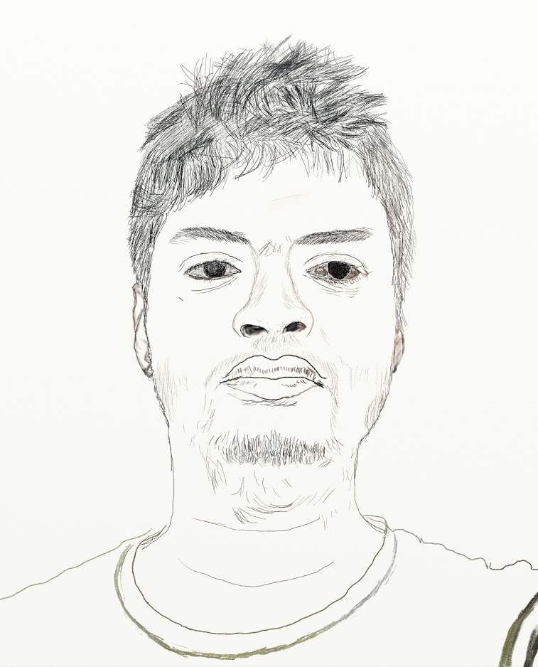

Leading the development of an AI-driven trading platform tailored for the Indian stock market, integrating advanced reinforcement learning and heuristic strategies for optimized portfolio management.
Led the development of an innovative solution for scanning damaged barcodes on mobile devices, leveraging advanced synthetic dataset generation and cutting-edge computer vision techniques to overcome real-world challenges.
Engineered a comprehensive anti-cheat proctored exam platform featuring advanced face recognition for secure candidate authentication and real-time face detection to flag potential plagiarism.
Developed an advanced real-time multiple face recognition system for live camera feeds and offline video processing.
Achieved a groundbreaking reduction in model parameters from millions to fewer than 20, maintaining high accuracy with only a minimal drop from 98% to 96%, enabling efficient on-device deployment.
In my spare time I play tabla. Sometimes its nice, sometimes its irratating for others, but I enjoy it.
I was excited that day. I never hopped that it will happen. It happend all of a sudden.
Sometimes I do digital sketching. I was earlier fond of this. I did a lot of drawings in my childhood. But when I joined high school I stopped all these things due to lack of time. I began this with one note, and then I ended doing these things in Art Rage 5.
